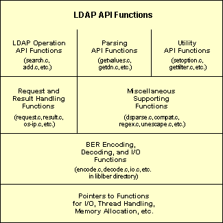
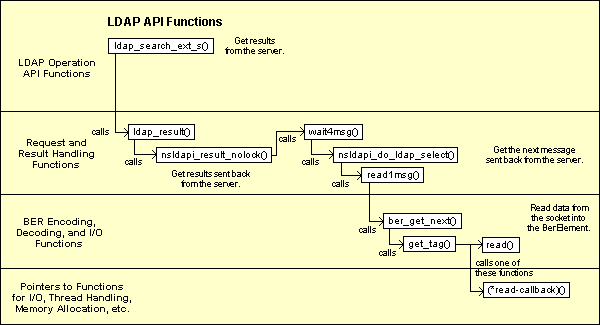

The source code for the LDAP C SDK consists of a library that implements the LDAP API and some command line utilities that provide LDAP access (e.g., the ldapsearch utility). The LDAP library defines functions that can establish sessions with LDAP servers, create and send LDAP requests to the servers, and retrieve responses from the servers.
In the LDAP protocol, requests and responses are encoded using the Basic Encoding Rules (BER). The SDK source code include functions for encoding and decoding data, according to these rules.
There is work underway in the IETF to standardize a LDAP API for C programmers, and the Mozilla LDAP C SDK closely follows the latest proposals.
The source code for the Mozilla LDAP C SDK is organized in the following directories:
mozilla/
directory/
c-sdk/ // Main makefile
ldap/
build/ // LDAP-specific build scripts
clients/tools // Command line utilities
examples/ // Sample code
include/ // Header files
libraries/
liblber/ // Functions for BER-encoding, decoding, and I/O
libldap/ // Functions implementing the LDAP API
libldif/ // Functions for manipulating LDIF data
libprldap/ // LDAP to NSPR "glue" library
libslldap/ // LDAP to NSS "glue" library
macintosh/ // MacOS-specific files
msdos/ // Windows-specific files
winsock/ // Windows .def files
dist/ // Contains the built SDK (created
// when you build the SDK)
The following diagram illustrates the internal architecture of the library:
The different sets of functions and source code files are described below.
Header Files. The following header files define the internal structures used in this library:
ldap-int.h in the libldap directory
lber-int.h in the liblber directory
LDAP Operation API Functions. These API
functions are responsible for requesting LDAP operations from the
server (such as ldap_search_ext_s() and
ldap_add_ext()).
These functions are defined in the following files:
abandon.c
add.c
bind.c, sbind.c (simple bind),
saslbind.c (SASL authentication)
compare.c
delete.c
extendop.c (LDAP v3 extended operations)
modify.c
rename.c (includes modify RDN and modify DN operations)
search.c,
url.c (functions for performing searches from LDAP URLs)
unbind.c
In addition, functions defined in the following files implement other aspects of the LDAP protocol as well as extensions to the protocol:
open.c (ldap_init function)
control.c (general functions for LDAP v3 controls)
psearch.c (functions for persistent searchand
entry change notificationcontrols)
sortctrl.c (functions for server-side sortingcontrols)
vlistctrl.c (functions for virtual list viewcontrols)
cldap.c (functions for CLDAP, Connectionless LDAP)
Parsing Functions. These API functions are
responsible for getting data from structures that represent entries,
attributes, and other containers (such as ldap_get_dn()
and ldap_get_values()).
These functions are defined in the following files:
error.c (functions for getting error information
from the LDAP structure)
message.c (functions for getting data about
LDAPMessage structures and for getting these
structures from search results)
referral.c (functions for handling smart referrals or
search references in search results)
getattr.c (functions for getting attributes from an entry)
getdn.c (functions for getting the DN from an entry
and for working with DNs)
getentry.c (functions for getting entries from
search results)
getvalues.c (functions for getting values from an
attribute)
countvalues.c (functions for counting the values in
an attribute)
reslist.c (functions for adding and deleting entries
from a list of search results)
Utility Functions. These are utility functions in the API.
These functions are defined in the following files:
getoption.c (functions for getting session preferences)
setoption.c (functions for setting session preferences)
getfilter.c, ldapfilter.conf (functions
for working with filter configuration files)
sort.c (functions for sorting search results)
free.c, freevalues.c (functions for
freeing memory)
memcache.c (functions for working with the in-memory cache)
friendly.c, ldapfriendly (functions for
getting the friendlyversion of a name from a mapping file)
ufn.c (functions for performing user friendlysearches)
cache.c (functions for a generic cache)
srchpref.c, ldapsearchprefs.conf
(functions for using a search preferences configuration file)
disptmpl.c, tmplout.c,
tmpltest.c, ldaptemplates.conf (functions
for using a template configuration file to display search results)
Request and Result Handling Functions. These functions are responsible for generating and sending requests to an LDAP server and for handling results returned from an LDAP server. The LDAP operation functions call these functions to send LDAP requests and retrieve results from an LDAP server.
These functions are defined in the following files:
request.c (functions for generating and sending
LDAP requests)
result.c (functions for getting results back from
the server)
os-ip.c (platform-specific TCP- and UDP-related functions)
Miscellaneous Functions. These are miscellaneous functions.
These functions are defined in the following files:
charray.c (functions for manipulating
char * arrays)
utf8.c (functions for handling UTF-8 character data)
unescape.c (functions for unescaping characters in a URL)
regex.c (functions for regular expression pattern
matching and replacement)
dsparse.c (functions for parsing template and search
preference configuration files)
compat.c (functions for compatibility across
different platforms)
mozock.c (functions that implement an intermediate
layer to network services)
globals.c (global variables for the LDAP library)
dllmain.c (DLLMain for the LDAP API library)
nsprthreadtest.c, pthreadtest.c (test
applications for testing the capability to specify thread handling
functions)
test.c (test application for testing the functions in
this library)
BER Encoding, Decoding, and I/O Functions. These functions encode requests and decode results, according to the Basic Encoding Rules (BER). The functions are also responsible for sending BER-encoded requests to the server and receiving BER-encoded results from the server.
These functions are defined in the following files, which are
located in the liblber directory:
decode.c (functions for decoding BER-encoded data)
encode.c (functions for BER-encoding data)
io.c (I/O functions for reading and writing
BER-encoded data)
bprint.c (functions for printing debugging information)
dtest.c, etest.c (test applications for
testing the encoding and decoding functions in this library)
idtest.c (test application for testing the decoding
functions with the ISODE library)
Unused Functions. The following source files are not compiled or used in the library. (ifdefs are used to omit the entire source code in these files.)
getdxbyname.c
charset.c
The following diagrams illustrate how
ldap_search_ext_s() calls other library functions to
generate and send an LDAP search request to the server and to get
results back from the server. Figure 1
illustrates how the function generates and sends the request, while
Figure 2 illustrates how the function gets
results back.
Figure 2: How ldap_search_ext_s() gets search results.
